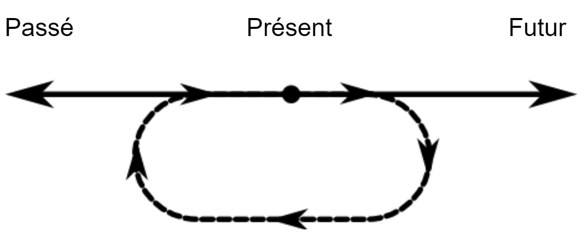
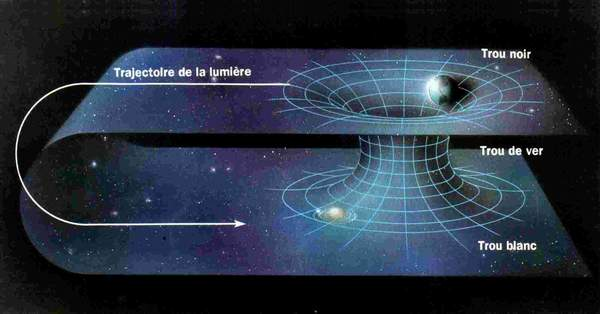

Relativité générale
L'espace-temps est un cadre quadridimensionnel qui combine les trois dimensions de l'espace et l'unique dimension du temps. Au lieu de traiter l'espace et le temps séparément, l'espace-temps les combine en une entité unique. Il est souvent représenté comme une grille à trois dimensions qui se plie et se déforme en présence de masse et d'énergie. La courbure causée par cette déformation est ce que nous appelons la gravité. Les objets, y compris la lumière, se déplacent le long de cette courbure sans le savoir, et plus elle est déformée, plus il leur faut de temps pour s'y déplacer. La courbure de l'espace-temps n'influence pas seulement la trajectoire des objets, mais aussi l'écoulement du temps pour ces objets. Le temps semble s'écouler plus lentement pour un observateur soumis à une forte force gravitationnelle (où l'espace-temps est plus courbé) que pour un observateur soumis à une force gravitationnelle plus faible. C'est ce que l'on appelle la dilatation gravitationnelle du temps.
Trou noir
Qu'est-ce qu'un trou noir ? Les trous noirs sont des régions de l'espace où une énorme masse est concentrée dans un volume minuscule, créant une force gravitationnelle si forte que rien, pas même la lumière, ne peut s'en échapper. Une horloge située à proximité d'un trou noir fonctionnera très lentement par rapport à une horloge située sur Terre. Il s'agit d'un exemple de dilatation gravitationnelle du temps. Ainsi, les trous noirs peuvent être utilisés pour voyager dans le futur.
Qu'en est-il du passé ?
Le trou noir le plus simple est appelé trou noir de Schwarzschild. Il s'agit de trous noirs non rotatifs dotés d'un horizon des événements et d'une singularité. L'horizon des événements est le point où il devient impossible de s'échapper d'un trou noir. À l'intérieur de cette limite, la vitesse nécessaire pour s'échapper du trou noir dépasse la vitesse de la lumière, qui est la plus grande vitesse possible. Ainsi, tout ce qui entre dans l'horizon des événements est condamné à y rester. Et si vous pouviez voyager dans le passé ou même dans d'autres univers ? Cela n'aurait pas d'importance, car l'horizon des événements fait en sorte que vous ne puissiez qu'avancer et finir dans la singularité, qui est le centre même d'un trou noir, où la matière est écrasée à une densité infinie.

Cependant, les choses sont différentes avec un trou noir en rotation, le trou noir de Kerr. Dans ce type de trou noir, il est théoriquement possible d'éviter la singularité, qui a la forme d'un anneau. Comment cela est-il possible ? Comme nous l'avons dit précédemment, une fois que vous avez franchi l'horizon des événements, vous ne pouvez qu'avancer vers la singularité, n'est-ce pas ? En réalité, le trou noir de Kerr possède deux horizons des événements : l'horizon intérieur et l'horizon extérieur. À chaque horizon des événements, les rôles de l'espace et du temps sont inversés. En d'autres mots, lorsque vous pénétrez dans l'horizon extérieur, l'espace devient temporel et le temps devient spatial. Dans l'horizon intérieur, les rôles s'échangent à nouveau, ce qui signifie que l'espace et le temps reprennent leur comportement normal. Une fois que vous avez repris le contrôle de l'espace, vous avez la possibilité d’éviter la singularité annulaire. L'horizon intérieur présente une symétrie de réflexion, ce qui signifie que vous pouvez poursuivre votre chemin à travers un deuxième horizon intérieur, un deuxième horizon extérieur et une nouvelle région extérieure isométrique par rapport à la région extérieure d'origine du trou noir. Cette deuxième région extérieure est parfois considérée comme un autre univers. Il est donc théoriquement possible qu'un trou noir de Kerr se comporte comme un trou de ver, voire comme un trou de ver traversable.

L'horizon intérieur présente également ce que l'on appelle des courbes temporelles fermées. Une courbe temporelle fermée est un résultat de l'effet Lense-Thirring, où un objet massif ou un champ gravitationnel intense se déplace et "entraîne" littéralement l'espace-temps avec lui. Pour comprendre ce qu'est une courbe temporelle fermée, il faut d'abord savoir ce qu'est une ligne d’univers. Une ligne d’univers décrit la trajectoire tracée par un objet dans l'espace-temps. Chaque point de cette ligne représente l'endroit où se trouve un objet à un moment donné. Dans une courbe temporelle fermée, la ligne du monde d'un objet suit un chemin curieux, revenant à son point de départ, ce qui suggère un voyage dans le temps vers le passé.
Trou de ver
Qu'est-ce qu'un trou de ver ? Un trou de ver est une structure hypothétique en forme de tunnel reliant deux points distincts dans l'espace-temps, pouvant servir de raccourci entre des distances extrêmement longues, voire des univers différents.

Les premiers trous de ver théorisés ont été les ponts d'Einstein-Rosen. Le concept commence par l'effondrement gravitationnel d'un objet massif, tel qu'une étoile, conduisant à la formation d'un trou noir de Schwarzschild. Le pont d'Einstein-Rosen est une extension de cette solution de Schwarzschild, suggérant la possibilité d'un tunnel reliant deux régions distinctes de l'espace-temps. À une extrémité du pont se trouve le trou noir de Schwarzschild, et à l'autre extrémité se trouve un trou blanc - une région hypothétique où tout est éjecté, mais où rien ne peut entrer (l'exact opposé d'un trou noir). L'idée est qu'un objet entrant dans le trou noir dans une région peut ressortir du trou blanc dans une autre région. Ce concept a donné lieu à des spéculations sur l'inversion potentielle de certains aspects, dont le temps. Cependant, on a constaté que ce type de trou de ver s'effondrerait trop rapidement pour que quoi que ce soit puisse passer d'une extrémité à l'autre.
Les trous de ver qui peuvent être traversés dans les deux sens sont appelés "trous de ver traversables". Selon la relativité générale, de tels trous de ver nécessiteraient de la matière exotique avec une densité d'énergie négative pour contrer les forces gravitationnelles qui, sinon, provoqueraient la fermeture de l'embouchure du trou de ver. Si des trous de ver stables et traversables pouvaient exister, ils pourraient servir de machines à remonter le temps. L'une des méthodes consiste à accélérer l'une des extrémités du trou de ver jusqu'à une fraction significative de la vitesse de la lumière, puis à la ramener à son point d'origine. Une autre méthode consiste à déplacer l'une des entrées du trou de ver dans le champ gravitationnel d'un objet massif, dont la force gravitationnelle est supérieure à celle de l'autre entrée, puis à la ramener à une position proche de l'autre entrée. Dans les deux cas, l'extrémité du trou de ver qui s'est déplacée vieillit moins vite en raison de la dilatation du temps. L'idée est que si quelqu'un entrait par l'extrémité la plus "jeune" et sortait par l'extrémité la plus "vieille" du trou de ver, il remonterait effectivement dans le temps, comme le verrait un observateur de l'extérieur.